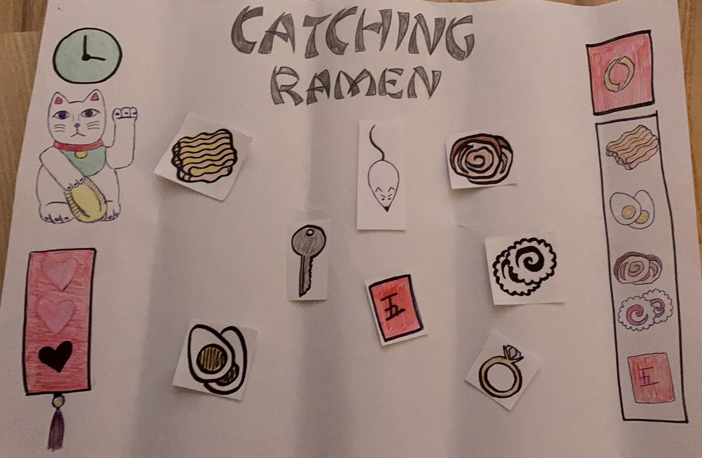
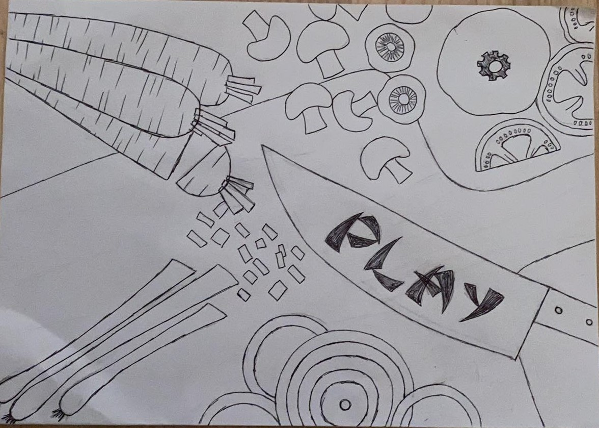
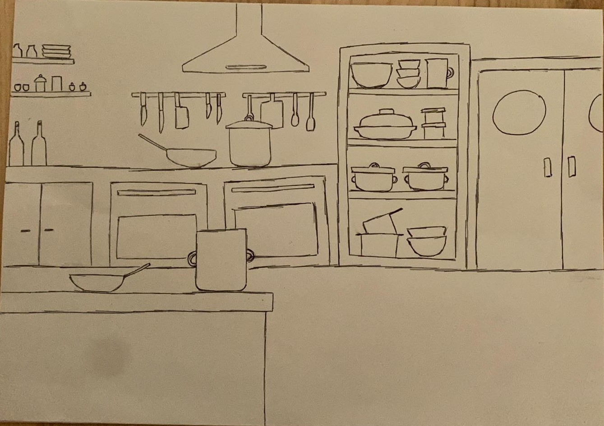

I dette tema skulle vi lære javascript i sammenhæng med css. Formålet med temaet var at kode et spil helt fra bunden og gøre det interaktivt ved hjælp af css og javascript. Spillet skulle vi selv finde på i forhold til ide, koncept og design af elementer og baggrunde. Designdelen foregik i hånden og i Illustrator som også var formålet at skulle lære bedre at kende.
Jeg valgte at lave et spil som handlede om at fange indgredienser til en skål ramen. Jeg designede spillet i stilarten flatdesign. Spillet havde en startskærm, spilskærm og 2 slutskærme, en vinderskærm og en taberskærm. Spillet varer 45 sekunder og man har 3 liv. Spillet fungerer sådan at der falder forskellige elementer ned fra skærmen. Hvis man trykker på en ramen indgrediens får man 1 point, hvis man trykker på en lei si får man 5 point, hvis man trykker på en nøgle eller ring mister man 1 point, hvis man trykker på musen mister man 1 liv. Man vinder spillet ved få 30 point, man taber spillet hvis man ikke når at få 30 point inden tiden løber ud eller mister alle liv.
For at få et bedre overblik over hvordan hele spillet fungerede skulle vi lave et aktivitetsdiagram. Dette lavede jeg inde i
Jeg valgte stilen flatdesign og tog udgangspunkt i tegneserien Den amerikanske Drage.
Først startede jeg ud med at lave en papir prototype af spillet. Dette gave en ide om hvordan mit spil ville fungere og se ud. Jeg tegnede mine skitser af alt i hånden og rentegnede dem derefter i Illustrator.
  Efter at have fundet min ide til mit spil lavede jeg et aktivitetsdiagram, dette hjalp med at holde styr spillet i forhold til hvad der sker når man klikker på hvilke ting og hvornår man mister eller taber spillet. Prototypen af spillet og skitserne af de forskellige skærme og elementer tegnet i hånden gjorde det en hel del mere overskueligt at lave i Illustrator. Det gør at man har et udgangspunkt til alle tingene. Derudover gjorde det at lave en assetliste at man havde overblik over hvad der var UI elementer, gode og dårlige elementer og de forskellige skærme og hvad der skulle være på på forhånd og hvad der skulle programmeres ind. Læren og brugen af javascript gjorde spillet klikbart og interaktivt. Dette gjorde at man kunne få point, miste point, miste liv, have tid på spillet, trykke ind på spillet fra start, vinder- og taberskærmen og at der ville komme en vinder- og taberskærm frem i forhold til hvorvidt man vandt eller tabte.